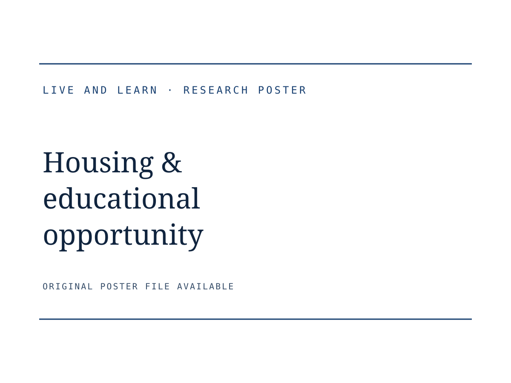
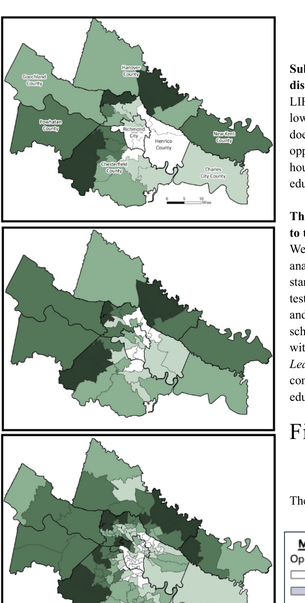
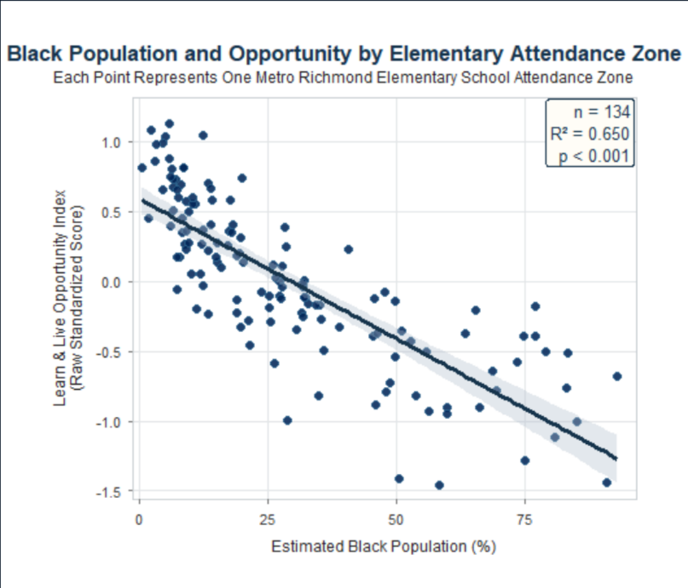
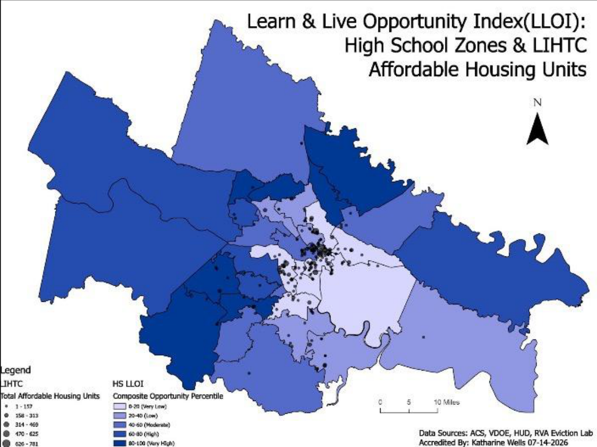

Collaborative research · 2026–ongoing
Housing and Educational Opportunity
A regional research project exploring how housing, socioeconomic conditions, and school attendance boundaries overlap across metropolitan Richmond.

The Question
Regional averages can hide differences between neighborhoods and school attendance zones. The Live and Learn Opportunity Index (LLOI) is a collaborative effort to examine housing, educational, and socioeconomic conditions together at a local scale.
The project studies 206 school attendance zones across eight Richmond-area jurisdictions using a 13-indicator framework. These measures are a way to organize questions about place and opportunity, not a causal explanation of individual outcomes.
My Contribution
Working with university researchers and regional housing and planning partners, I integrate spatial data, develop reproducible R and ArcGIS Pro workflows, construct index measures, and communicate the work through maps and research materials. I am especially interested in moving from documenting variation to asking how communities and local decision-makers might use evidence to address it.
The project is ongoing. The team is developing policy-facing materials for local decision-makers, and the measures, maps, and interpretation continue to be refined.
Selected Figures from the Working Paper
These are original figures excerpted from a working white-paper draft, not a final published report. Captions retain the draft context; the association shown in the regression figure does not establish causality.




Related Report and Poster
The University of Richmond’s Live and Learn 2.0 report release provides related project context. The poster below is the original research presentation file made available for this portfolio.
The full working white paper is not hosted here. Only the linked report-release page and listed poster files are presented as public materials.